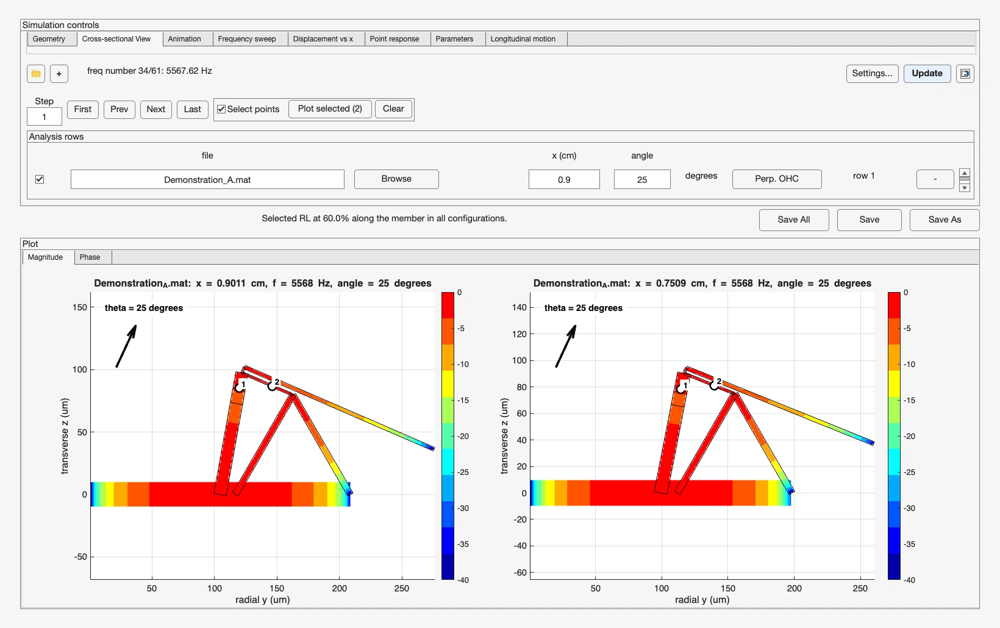
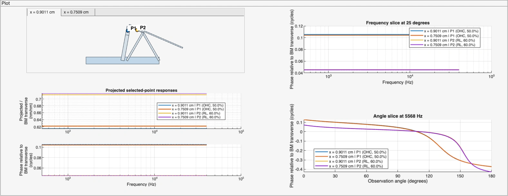

Make multidimensional results practical to explore.
A saved cochlear simulation contains complex displacement responses across position and frequency. The response observed at an anatomical point also depends on the direction from which motion is measured.
I built the interface around those scientific choices. Researchers can load multiple cases, choose locations and observation angles, compare views in parallel or overlay them, and move between geometry, response plots, and animation while retaining their analysis configuration.
- Geometry
- Cross-sectional view
- Animation
- Frequency sweep
- Displacement vs. position
- Point response
- Parameters
- Longitudinal motion
Track the same physical point across changing geometries.
Selecting a point records its anatomical member and relative position along and across that member. The application maps that reference into each configuration, so a point on an outer hair cell remains attached to the corresponding structure as the geometry changes.
Linked markers carry through to the response plots. A cross-sectional locator identifies each selected point, while legends show the differences between cases. This keeps the curves connected to the anatomy that produced them.


Keep magnitude, phase, and reference consistent.
The application projects radial and transverse complex displacement onto the observation direction. An angle of 0° selects transverse motion; 90° selects radial motion. A geometry-based control also sets the viewing direction perpendicular to the local outer hair cell.
Selected-point responses can use absolute displacement or the local basilar membrane (BM) as a reference. The BM reference produces a magnitude ratio and phase difference at the same location and frequency. Frequency-dependent phase is unwrapped and displayed in cycles; missing or zero references remain gaps.
Angular responses can be explored as a heatmap or as separate frequency and angle slices. Labels and units update with the selected component, quantity, and reference.


Connect the motion overview to the moving junction.
V2 integrates Tim Kim’s longitudinal organ-of-Corti formulation into my existing application. The view pairs an array of outer-hair-cell, phalangeal-process, and Deiters-cell structures with a closeup of the central junction’s trajectory.
The overview and closeup advance at the same cycle phase. Geometry and complex response interpolation are prepared before playback; persistent plot objects update within fixed axes. Attachment points use responses at their own longitudinal positions, and boundary checks keep them inside the saved mesh.
A Best place control locates the largest saved BM response at the selected frequency. Researchers can adjust structure count, spacing, displacement scale, and playback rate, then export the animation.
Build checks into the analysis workflow.
I organized file handling, geometry, mechanics, plotting, and validation into separate modules. Selected-point responses are cached so display changes can reuse the computed complex data. The application exports editable MATLAB figures, parameter tables, and animation movies.
The October 6, 2026 verification run covers projection conventions, anatomical point mapping, agreement between point and field calculations, BM reference handling, longitudinal attachment continuity, boundary behavior, and stable animation objects. These checks establish software consistency within the tested cases; biological validation remains part of the lab’s research.
An evolving tool for the Meaud Lab.
My contribution centers on the GUI, analysis workflows, geometry mapping, projection, and visualization built around the lab’s cochlear model. The longitudinal extension incorporates Tim Kim’s formulation within this application.
I joined the lab in August 2025 and am also a coauthor of the research abstract “Active cochlear model with longitudinal motion in organ of Corti and dual traveling waves,” with Julien Meaud, Chaehwan Kim, Wei Dong, and Bastian Meenderink.